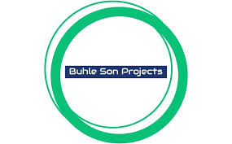

We Help South Africa
Proudly Founded Andile Mthimkulu
We Help South Africa: Empowering Citizens Through Technology
\
 In an era where technology permeates every aspect of life, access to digital resources has become crucial for personal and professional development. We Help South Africa stands out as a beacon of support for South Africans navigating the often complex landscape of technology-driven processes, such as university applications, driver’s licenses, and more. This website serves not only as a resource hub but also as a community-oriented platform designed to empower individuals by simplifying bureaucratic procedures through technological assistance.
In an era where technology permeates every aspect of life, access to digital resources has become crucial for personal and professional development. We Help South Africa stands out as a beacon of support for South Africans navigating the often complex landscape of technology-driven processes, such as university applications, driver’s licenses, and more. This website serves not only as a resource hub but also as a community-oriented platform designed to empower individuals by simplifying bureaucratic procedures through technological assistance.
Bridging The Gap
One of the most significant barriers many South Africans face is a lack of knowledge and access to essential technological tools. We Help South Africa addresses this gap by providing comprehensive guides, tutorials, and step-by-step instructions for various processes that can be daunting without proper guidance. For instance, university applications can be particularly overwhelming, with multiple forms, deadlines, and requirements to consider. The website offers curated information tailored to different institutions, helping prospective students understand what is needed and how to prepare effectively.
Embracing Digital Literacy
n addition to providing immediate assistance with specific tasks, We Help South Africa promotes digital literacy as a foundational skill for the modern age. By offering workshops, webinars, and online courses, the website equips users with essential tech skills, from basic computer proficiency to navigating social media responsibly. This focus on education not only helps individuals with immediate needs but also prepares them for future challenges in an increasingly digital world.